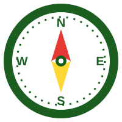

Your 3 careers
Your 3 careers will appear here, each with the reason we chose it, the subjects to focus on and real Nigerian routes into it.

NAIJA CAREER COMPASS AIBuilt with AI by Yewa College ByteBusters
Tell us what you enjoy. The AI suggests 3 careers with real Nigerian routes into them: university, polytechnic or a skilled trade.
Maybe a software developer?
Secondary and tertiary students often have limited awareness of the full range of career opportunities available to them, and existing career guidance is often generic or disconnected from their actual interests and strengths.
Your 3 careers will appear here, each with the reason we chose it, the subjects to focus on and real Nigerian routes into it.
There is no sign-up and nothing is saved. Before anything reaches the AI, a privacy filter removes phone numbers, emails, account or ID numbers, names after "my name is", and ages.
The key that lets us use the AI is paid for by an adult. It lives only on the server, never in this page and never on the screen.
Read how to get into any career, or see what your subjects can become.
Four steps, from your answers to your 3 career cards.
Pick your 3 best subjects and what you enjoy. Choose from the lists or type your own.
A privacy filter removes names, ages, phone numbers and emails. Then our code checks that every answer is filled in.
The AI reads our careful instructions plus your answers, and replies with exactly 3 careers.
Our code checks the guardrails, then shows each career with the reason, the subjects and the routes.
You answer 9 short questions about your best subjects and what you enjoy. A privacy filter removes personal details, the AI suggests exactly 3 careers, and our code checks its answer before you see it.
Start with what you enjoy, what you are naturally good at and where you like to work. We turn those answers into 3 careers, each with the subjects to focus on and a real Nigerian route: university through JAMB/UTME, polytechnic (ND/HND) or college of education (NCE), or a skilled trade through NABTEB or an apprenticeship.
Yes. There is no sign-up and nothing is saved. A privacy filter removes names, ages, phone numbers, emails and ID numbers before anything reaches the AI.
Yes. Choose from 17 Nigerian languages in "Write my careers in". Career titles and exam names (WAEC, JAMB, NABTEB) stay in English so you can search for them.
Press "💬 Talk to my parents" on any career card. The AI writes a short, respectful message in your parents' language, with answers to the worries parents often have. Copy it, read it aloud, or send it on WhatsApp.
Yes. Trades such as electrical installation, solar, welding, tailoring and catering are in steady demand. Every result includes at least one skilled trade, and trade cards link to Apprentice Pathways Explorer for the full training path.